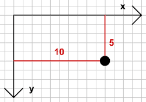
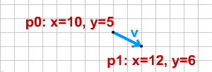

- Using vectors
- 4) Move, Accelerate
- 5) Intersection
- 6) Bounce
- The ball
- 7) Ball vs Line
- 8) Ball in the Corner
- 9) Ball vs Ball
- 10) Ball vs Moving Ball
- 11) Moving balls
- 12) Ball vs Arc
- Extras
- Downloads

1) Point, Vector
벡터, 이것은 무엇일까요?
만약 어떤 게임을 만들려고 한다면, 화면에 오브젝트를 위치시키고 움직여야 합니다. 이미 알다시피, 화면에서 오브젝트는 x, y 라는 2차원 좌표값을 갖고 있습니다. 그래서 우리는 화면 상의 지점 p를 아래와 같이 선언할 수 있습니다.
p = {x:10, y:5};훌륭하죠, 한 줄로 “p” 라는 새 객체를 생성하고 선언 했을 뿐 아니라 “x”, “y” 2개의 속성도 부여했습니다. 화면 상의 어느 한 지점을 포인트(Point)라고 합니다. 아래와 같은 방법으로 각각의 속성을 접근할 수 있습니다.
p.x
p.y이제 포인트 객체 p의 x 속성에 10을, y 속성에 5를 부여합니다. 그래픽 요소를 만들어서 그 위치에 놓을 수 있을 것입니다.

컴퓨터의 화면은 우리가 흔히 알고 있는 y 축 좌표체계(위로 갈 수록 값이 높아지는)와는 반대로 아래로 갈수록 값이 올라가는 (반전된) 좌표를 사용합니다. 이렇게, 우리는 1 개의 포인트를 만들고 그것이 어떻게 화면 상에 놓여지는지 알 수 있게 되었습니다.
좀더 복잡한 내용으로 넘어가 봅시다. 2개의 포인트를 만듭니다.
p0 = {x:10, y:5};
p1 = {x:12, y:6};이렇게 우리는 첫번째 벡터를 만들었습니다. 의아해 하지 않아도 됩니다. 벡터는 “시작점”이라 부르는 포인트 p0와 “끝점” 포인트 p1, 이렇게 2 개의 포인트로 만들어 집니다. 벡터는 방향성을 갖고 있음을 기억해야 합니다. 벡터 p0→p1 는 벡터 p1→p0 는 다릅니다. 이 2개의 벡터는 같은 길이와 같은 포인트를 갖고 있어서 매우 닮았지만 반대방향을 갖고 있기 때문에 같은 벡터라고 할 수 없습니다.
우리가 앞서 만든 것을 아래와 같이 선언합니다.
v = {
p0:{x:10, y:5},
p1:{x:12, y:6}
};그리고 포인트를 이용해 벡터 v를 좌표평면에 그릴 수도 있습니다.

지금까지 너무 쉽지만 이게 끝이 아닙니다. 벡터 v는 시작점과 방향 속성으로도 정의될 수 있습니다. 잠시만요, 그렇다고 아직은 점 p1이 의미가 없다고 잊어버리진 마세요. 그렇다면, 끝점 p1 없이 어떻게 벡터를 만들어 낼까요? 쉽습니다.
v = {
p0:{x:10, y:5},
vx:2,
vy:1
};위치와 속도로 정의한 벡터의 기본 정의이다.
익숙한가요? 앞에서 만든 벡터와 정확히 같은 벡터입니다. 같은 시작점을 갖고 있으며, 2 값을 갖고 있는 vx 요소와 1 값을 갖고 있는 vy 요소를 만들었습니다. 이 벡터는 이렇게 말할 수 있습니다. “시작점 (x=10, y=5)에서 오른쪽으로 2칸 이동하고 아래로 1칸 이동한다”. 직접 이동시켜보면 정확히 점 p1에서 끝나게 됨을 알 수 있습니다. 그리고, 모든 벡터 끝점은 벡터의 시작점과 vx, vy 요소로 계산하여 알 수 있습니다.
여기서 vx, vy요소는 변화의 크기를 말한다. 결국 속도의 개념이다.
v.p1 = {};
v.p1.x = v.p0.x + v.vx;
v.p1.y = v.p0.y + v.vy;그리고 2개의 포인트로 벡터를 만들었다면, 언제든 벡터의 vx, vy요소를 알아낼 수 있습니다.
v.vx = v.p1.x - v.p0.x;
v.vy = v.p1.y - v.p0.y;이로써, 우리가 어떤 벡터에 대해 얘기 할 때마다, 벡터는 2개의 포인트(p0, p1)을 갖고 있으며, 포인트 또한 x / y 좌표를 갖고 있고, 벡터도 vx / vy 요소가 있음을 알 것입니다. 이 벡터는 “빠르기”, “속력”, “운동량”, “이동” 같이 비슷한 의미의 다양한 이름으로 불려집니다. 이런 이름들 때문에 혼란스러워하지 마세요. 단지 물체를 vx와 vy 방향으로 이동시킬 뿐입니다.
주의할 것은 단 하나, 벡터는 방향과 빠르기를 동시에 나타낸다는 것니다. 예를 들어 우리는 속력과 속도를 다르게 정의합니다. 속력은 단지 빠르기만 나타낼 뿐이고, 속도는 빠르기와 방향을 나타냅니다. 벡터는 속도를 표현하는 방식인 것입니다.
다음 : Length. Normals